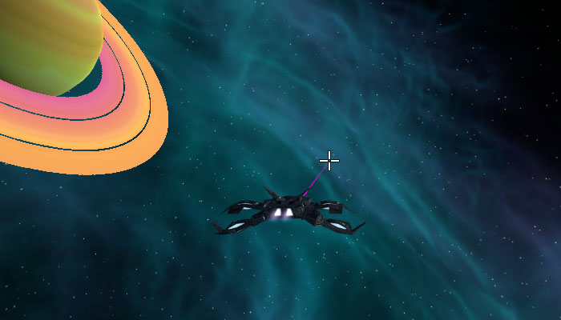
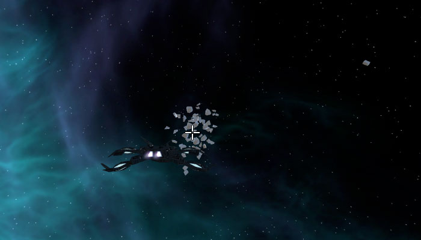
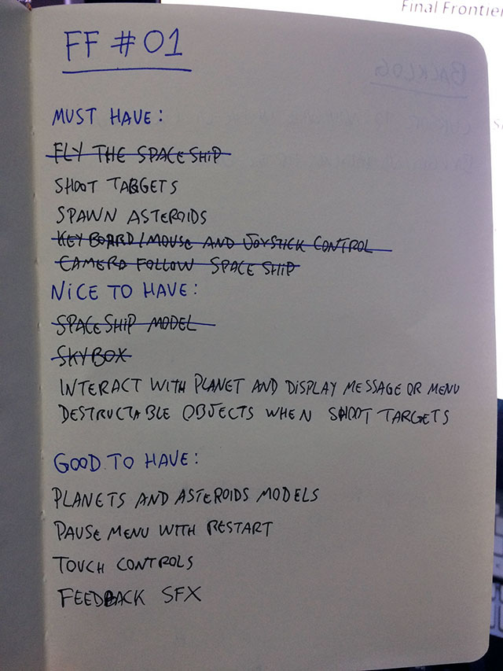

Faz um mês desde o último post sobre o andamento deste projeto, mas ele não está parado. Mês passado teve o Ludum Dare #36 e realizei uma palestra na USP sobre Game Jams, então meu tempo livre (e os posts do blog) foram voltados a estes eventos. Agora que tudo passou, vamos voltar ao Final Frontier.
Desta vez vou falar sobre a substituição da colisão de objetos do tiro por Raycast, uma classe para fazer Spawn de objetos usando o design pattern Prototype e o início da organização das tarefas do projeto usando o método MoSCoW.
Substituindo colisão do tiro por Raycast
No último post sobre o andamento do jogo eu mencionei que iria adicionar uma mira no centro da tela para o jogador ter uma noção melhor de onde está atirando. Eu adicionei, porém o tiro ficou estranho. Como a nave está em constante movimento, o tiro (que é uma bola) estava indo bem fora da mira se a nave estivesse virando. Geralmente no início do projeto do protótipo não devemos perder tempo em melhorias, mas neste caso faria toda diferença ter um tiro mais consistente.

Por isso decidi implementar a técnica de Raycast para determinar se hoje a colisão com o objeto (então explodi-lo). A Unity tem bastante coisa implementada para auxiliar no uso do Raycast, então não é algo complicado de implementar, apenas leva um tempo para ajustar. Para desenhar a linha do tiro, que seria como um laser, pesquisei como fazer e encontrei este excelente tutorial da Unity (video abaixo) que cobre também como fazer o Raycast.
O resultado final ficou muito melhor do que o tiro com as bolinhas. Não é algo final, talvez eu mude isto mesmo durante o protótipo, mas agora está mais consistente para eu poder continuar desenvolvendo o jogo, principalmente para adicionar novos objetos para serem destruídos. O video abaixo também é uma ótima referencia para o uso de Raycast na Unity.
Spawner de objetos com prototype
Agora que o tiro está bem melhor, decidi adicionar mais objetos para o jogador atirar. Por enquanto ainda estou utilizando a mesma caixa do início do projeto, porém criei um spawn aleatório. No momento limitei para gerar 10 grupos contendo 4 caixas (2x2) ao redor da nave, em qualquer direção. Antes estava usando um grupo de 9 caixas (3x3) e o frame rate caia demais na explosão, e por ser apenas um teste não vale a pena perder tempo nisso agora, então reduzi para menos caixas (que depois vai ser um asteroide ou algum outro objeto no espaço).

O spawn de objetos é algo muito simples de fazer utilizando o design pattern Prototype, principalmente na Unity onde o protótipo é um prefab. Utilizei o mesmo conceito em alguns jogos que fiz usando Unity em dois Ludum Dare, então copiei o código de lá e adicionei ao projeto.
Reaproveitar código de outros projetos, mesmo classes pequenas como esta que utilizei, ajudam a ganhar tempo por dois motivos: não perder tempo escrevendo o código e não perder tempo testando o código. É sempre bom ter alguns códigos prontos e, de preferência, escritos para serem reaproveitados em diferentes projetos. Algo ainda mais sofisticado seria criar módulos ou plugins (no caso da Unity), muitas empresas fazem isto para reaproveitar códigos que podem estar em qualquer projeto. Por isso, sempre é bom seguir o princípio K.I.S.S.
Método MoSCoW
Antes de pensar em fazer um GDD, é legal listar algumas ideias do que será o jogo. Eu fiz uma longa lista de features que gostaria de colocar no jogo, isto não significa que estão na versão final mas serão testadas durante a fase de prototipagem. Esta lista, que podemos chamar de backlog, contém diversas tarefas que podem ser divididas em partes menores. É o mesmo conceito de definir as tarefas de uma sprint no Scrum.
Mais tarde vou começar a criar o GDD na Wiki do projeto no GitHub, além de fazer um controle das tarefas utilizando Trello. Mas, por enquanto, vou utilizar papel e caneta, e um método chamado MoSCoW. Este método consiste em classificar as features ou tarefas em 4 tipos:
- Must have: importante e obrigatório
- Should have: importante, mas não necessário
- Could have: desejável, mas não importante
- Won't have: importante NÃO ter
Isto é algo bem simples que ajuda a organizar a prioridade de tarefas, mas sem burocracias ou dependência de uma ferramenta específica. Apenas anote os itens em casa uma das classificações e pronto, ai está sua lista de tarefas organizada. A ideia do "Won't have" é que não se deve perder tempo com as tarefas nesta classificação. Um exemplo disso seriam tarefas relacionadas a melhorias e polimentos não necessários em um protótipo.
Abaixo está a lista que montei para esta primeira parte do projeto desde seu início, e o número #01 indica que é a primeira lista. "Nice to have" e "Good to have" equivalem a "Should have" e "Could have", respectivamente, e não tem o "Won't have". Aprendi a separar as tarefas desta maneira com um produtor quando trabalhava na EA, sem saber que isto se chamava MoSCoW (e que tinha o Won't have).

No verso desta folha adicionei uma lista chamada "Backlog" para listar ideias que tive durante o desenvolvimento das tarefas, assim posso planejar a próxima lista considerando estas ideas como possíveis tarefas.
Próximos Passos
Agora que o tiro está bem melhor, e com uma mira para auxiliar sua direção, o próximo passo vai ser melhorar um pouco o movimento da nave, pois ela está saindo da tela com frequência e ficando em uma posição errada quando volta. É um detalhe que precisa ser arrumado antes de começar a pensar em adicionar features como inimigos ao protótipo. Outra coisa que quero fazer é uma interação com o planeja que está no cenário, fazendo aparecer um tela quando o jogador se aproximar do planeja e exibindo algumas ações disponíveis.
O andamento do projeto pode ser conferido no GitHub e neste link você pode ver as alterações no projeto até este post. Todos os posts desta série sobre meu projeto podem ser vistos na tag Final Frontier, e como sempre qualquer sugestão ou opinião é bem vinda!